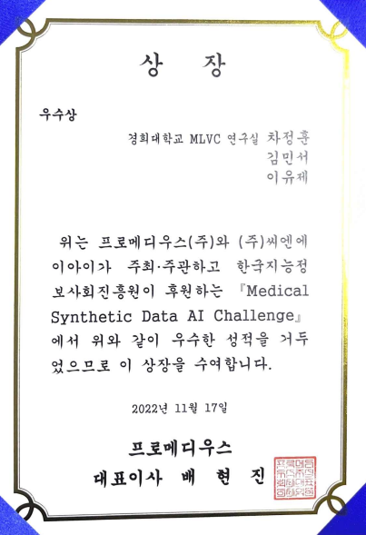

대회 설명
인공지능 학습용 의료데이터를 이용한 질병 유무 및 종류 판독 AI 모델 개발 챌린지
한국지능정보사회진흥원(NIA)의 지원을 받아 구축하는 2022 인공지능 학습용 데이터 구축 사업의 결과물인 의료용 합성 데이터를 활용하여 질병 유무 및 종류 판독 인공지능 모델을 개발하는 대회입니다.
대회 내용
- 흉부 X-ray 데이터를 이용한 질병 유무 구분 (Binary classification 모델 1개)
- 흉부 CT 데이터를 이용한 질병 유무 구분 (Binary classification 모델 1개)
주최 및 주관
- 주최: 과학기술정보통신부, 한국지능정보사회진흥원
- 주관: 프로메디우스 / CN.AI
- 후원: 한국지능정보사회진흥원
- 참여기관: 국립암센터 / 고신대학교복음병원 / 서울대학교병원 / 연세대학교 산학협력단
해결 방법
- Data Augmentation
resize, random crop, random flip(horizontal, vertical), random perspective
- Model
CT - convnext_femto
X-ray - torchxrayvision에서 제공하는 densenet
- Hyper parameters Tuning
유병 확률을 출력하고 그에 따라 유병/무병을 판별할 threshold 값 조정